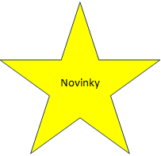

MS Word 2000
Novinky v této verzi
|  |
Mezi otevřenými dokumenty sady Office lze přepínat pomocí hlavního panelu systému Windows, na kterém je každý dokument zastoupen tlačítkem s ikonou.
Pomocí hypertextových odkazů nebo složky Oblíbené položky můžete vy nebo správce systému vytvářet zástupce souborů, složek nebo stránek WWW. Na panely nástrojů sady Office lze přidat tlačítka a vytvořit propojení na firemní dokumenty a nejčastěji používané zdroje v síti Internet.
V nabídkách a na panelech nástrojů aplikací sady Office 2000 se zobrazují pouze nejpoužívanější příkazy. Nabídky však lze snadno rozbalit a zobrazit všechny příkazy sady Office. Klepnete-li na určitý příkaz, bude při příštím klepnutí na nabídku příkaz v nabídce zobrazen mezi často používanými příkazy. Všechny panely nástrojů jsou umístěny na jednom řádku, můžete proto pracovat na větší ploše. Pokud klepnete na tlačítko na panelu nástrojů, bude toto tlačítko přidáno do zobrazeného panelu nástrojů. Panely nástrojů lze také snadno upravit.[y1]
Práci ve Wordu usnadňují klávesové zkratky (viz Tabulka 1: Klávesové Zkratky)
Funkce Zadání po klepnutí slouží k rychlému
vkládání textu, grafiky, tabulek a dalších typů položek
do prázdné oblasti v dokumentu. Tato funkce automaticky použije formátování
potřebné k umístění dané položky na místo, kam jste poklepali.
Chcete-li například vytvořit titulní stránku, poklepejte
doprostřed prázdné stránky a zadejte titulek zarovnaný na střed.
Nová schránka sady Office slouží ke shromáždění položek ze všech aplikací sady Office včetně prohlížeče sítě WWW a k jejich vložení na požadované místo. Do schránky sady Office můžete uložit až 12 objektů.
Dělení slov lze použít u dokumentů napsaných v mnoha jazycích. Při rozpoznání jiného jazyka je v aplikaci MS Word provedeno správné dělení slov, jestliže jste ho povolili.
Tabulka 1: Klávesové zkratky
|
|
Akce |
Zkratka |
|
MS Word |
Kopírovat |
CTRL+C |
|
Odstranit slovo |
CTRL+BACKSPACE |
|
|
Přejít na začátek dokumentu |
CTRL+HOME |
|
|
Přejít na konec dokumentu |
CTRL+END |
|
|
Vložit |
CTRL+V |
|
|
Uložit |
CTRL+S |
|
|
Vybrat vše |
CTRL+A |
hypertextový odkaz, 2
klávesová zkratka. viz Užitečné klávesové zkratky
tabulka, 3
úchyt, 3
vnořené, 2
Obsah
1 Usnadnění práce s pracovní plochou sady Microsoft Office 2000
1.1 Použití individuálních nabídek a panelů nástrojů
1.2 Zobrazení otevřených dokumentů
1.3 Snadnější přístup pomocí zástupců
2.2 Vícenásobné kopírování a vkládání pomocí schránky sady Office
[y1]Toto lze potlačit volbou Nástroje, Vlastní na kartě Možnosti. - Ondřej Vondra